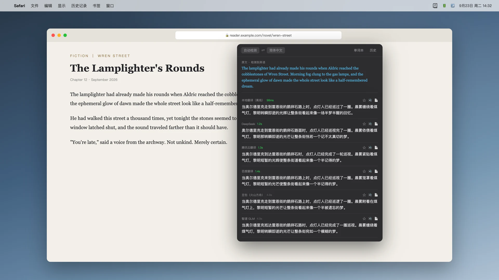

Capture the screen, or just type
Press ⌥A to select text on your screen, or ⌥D to type or paste. Use it with webpages, papers, games and app interfaces.
A little help with reading on your Mac
Draw a box. Keep reading.
Translate text in webpages, PDFs, subtitles and apps—even when you can't copy it.
Capture a region or type your text, then compare answers from multiple engines.
For Mac · Requires macOS 15.0 or later
Available in App Store regions outside mainland China. Not yet available in the mainland China store.

Less switching, more reading
No need to move every sentence
into a translation website.
Press ⌥A to select text on your screen, or ⌥D to type or paste. Use it with webpages, papers, games and app interfaces.
The same sentence can have several readings. See translations together and choose the one that fits the context.
Save the original and its translation to your wordbook. Ask your configured AI for meanings, usage and examples, or revisit past translations in your history.
Use services you already know
Configure DeepSeek, Doubao, Kimi, GPT, Tencent or Baidu. OpenAI-compatible services work too: enter your endpoint, model and API key to connect your own AI service.
Read the setup guidePlus your own OpenAI-compatible services
Cloud engines require your own keys. Each provider sets its availability and usage fees.
Know where your data goes
No app account to create. OCR runs on your Mac, and your wordbook and history stay there. When you choose a cloud engine, text goes directly to your configured provider. Local translation may need a language pack download first.
Read our privacy policyGet OCR截图翻译 for your Mac.
Open the Mac App StoreThis link opens the US store. In other supported regions, search for “OCR截图翻译”.